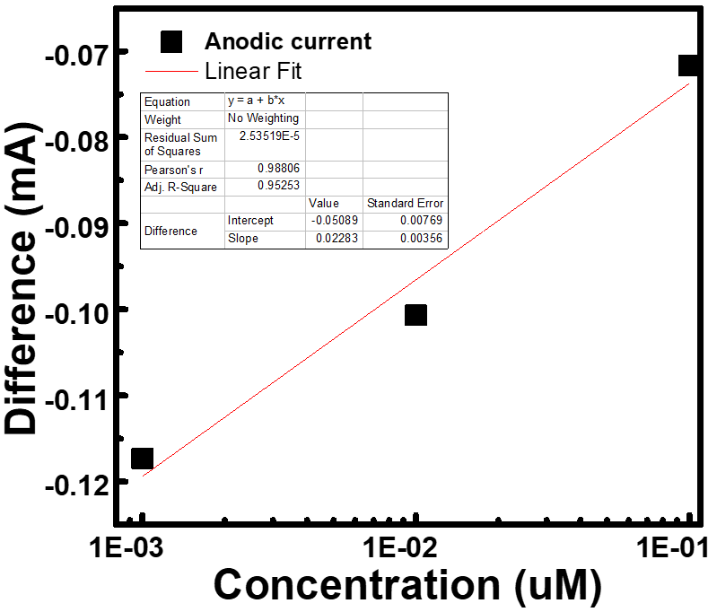
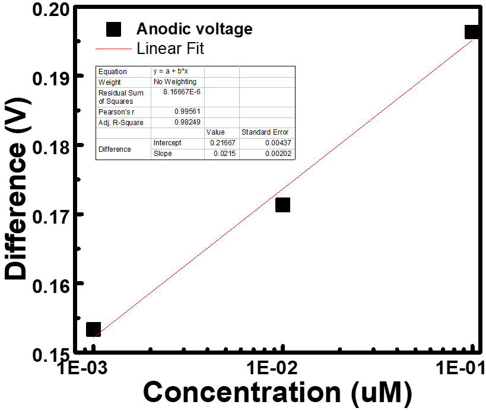

Detection
Introduction
Cyclic voltammetry

For testing the result, we used cyclic voltammetry as an electrochemistry method.
Experiment
Surface Cleaning
After the chip package is completed, electrodes could be cleaned by cyclic voltammetry. The first wash was carried out at one M NaOH at a speed of 0.3 V / s in the range -0.two to + 0.8 V, followed by a second wash in 0.5 M H2SO4 at a speed of 0.3 V / s and a range of -0.two5 to + one.75 V.
The connection between Au and DNA probe


There are two curves in each plot. The lines in black show the original state of each chip. And the lines in red show the state which was added 0.1/0.01/0.001 uM probe DNA. As figure, there were significant difference between two curves each plot.
We know that DNA is in negative charge. Therefore, when capture probe connected with the electrode, the negative charge would be elevated, and the curve would be inward such as the line in red, which showed in the figure, descripting that DNA were connected to the electrode successfully.

The table show the difference between different concentration of capture probe.


The two plot shoe the linear fit between concentration and difference (V/mA).
The connection between Graphene and DNA probe
The connection between target and probe DNA
Discussion
Conclusion